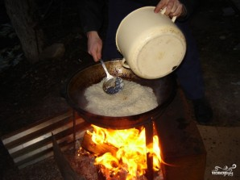
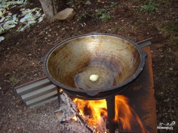
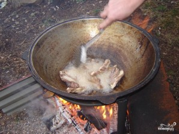
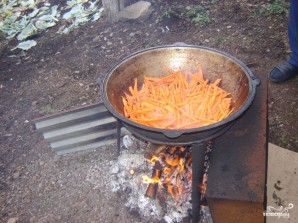

Ингредиенты для идеального плова
Основные ингредиенты

Рис
Тип: Тайландский пропаренный или узбекский девзира
Роль в плове: Основной компонент, впитывает все ароматы
Как выбрать: Крупа должна быть прозрачной, без мусора
- Лучшие сорта для плова:
- Девзира
- Басмати
- Жасмин
- Пропорции: 1 кг риса на 1 кг мяса

Мясо
Тип: Баранина, говядина или курица
Роль в плове: Создает основной бульон и вкус
Как выбрать: Свежее мясо с жировыми прослойками
- Баранина - классический выбор
- Говядина - более доступный вариант
- Курица - для диетического плова

Овощи
Морковь и лук
- Морковь - лучше желтая, но подойдет и оранжевая
- Лук - репчатый, золотистый
- Чеснок - целыми головками
Специи для плова

Основные специи
Душа плова
Обязательные специи:
- Зира - главная специя
- Барбарис - дает кислинку
- Куркума - для цвета
- Перец черный - молотый или горошком
Дополнительные специи:
- Кориандр
- Паприка
- Шафран
- Сушеный укроп